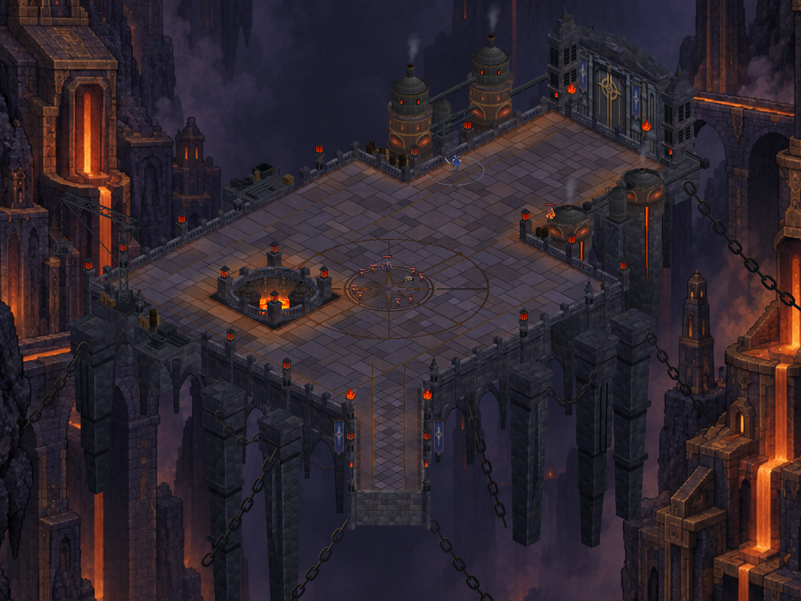
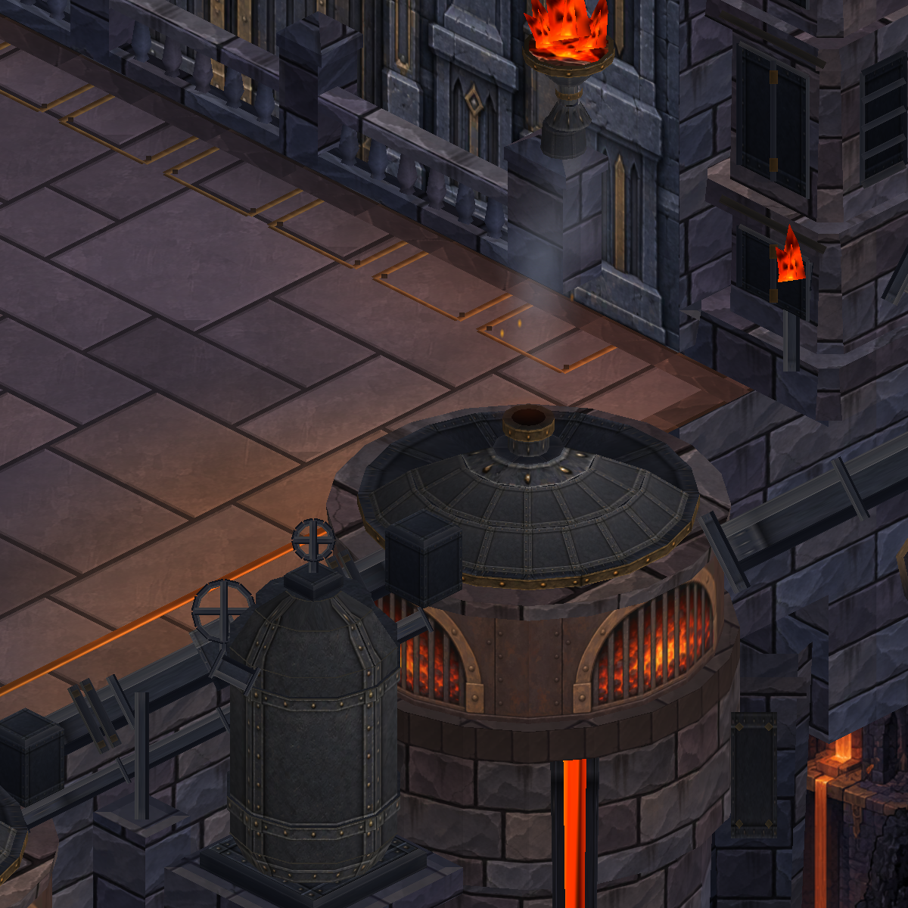
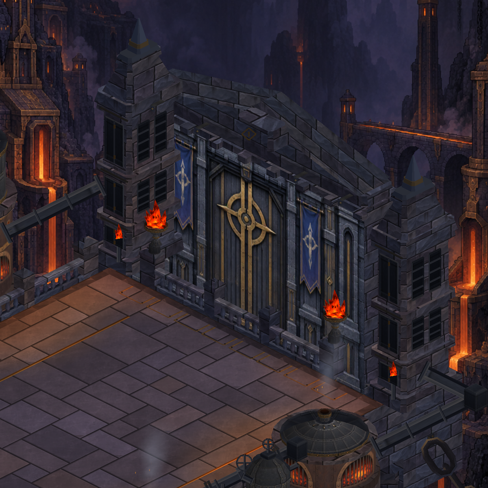

Dökümhane — metal ve taş ayrımı
Solda önce, sağda yeni dövme metal. Taşa benzeyen kırık yüzeyler azaltıldı; metal paneller, perçinler ve aşınmış kenarlar korunuyor. Gerçek Unity görüntüleri.
Üretim ve doğrulama · Üretim promptları
overview — önce / sonra


furnace-detail — önce / sonra


workshop-detail — önce / sonra
gate-detail — önce / sonra


undercroft-detail — önce / sonra
545 test geçti; Android paketi hazır. Bu metal sürümü henüz telefona yüklenmedi.